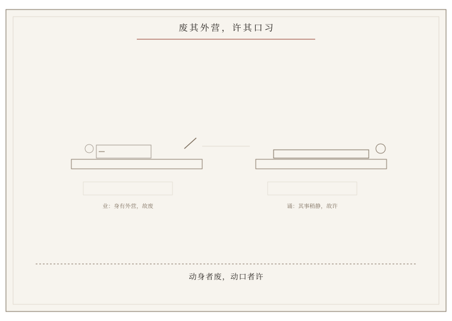

檀弓上 · 三·三十 · 第 233 课
大功废业。或曰「大功诵可也」。注「许其口习故也」。
说什么事：服大功者，停学；有人说，诵读还是可以的。
落在哪一层：礼，兼及礼制与礼意。论丧中「业」与「诵」之别。
为何编在此位：上节论丧事之俭，此节论丧中之学。俭其身，废其业，皆是为哀留地步。
【经】大功廢業。或曰：「大功誦可也。」
【注】许其口习故也。
【疏】此一节论遭丧废业之事。「大功废业」者，业谓所学；习业则身有外营，思虑他事，恐其忘哀，故废业也。「诵则在身所为，其事稍静，不虑忘哀，故许其口习」。言「或曰」者，以其事疑，故称「或曰」。然录记之人必当明礼，应事无疑，使后世作法；今检《礼记》，多有不定之辞：仲尼门徒亲承圣旨，子游裼裘而吊、曾子袭裘而吊；又小敛之奠，或云东方，或云西方；同母异父昆弟，鲁人或云为之齐衰，或云大功。其作记之人，多云「盖」，多云「或曰」，皆无指的，并设疑辞者，以周公制礼，永世作法，时经幽厉之乱，又遇齐晋之强，国异家殊，乐崩礼坏，诸侯奢僭，典法讹舛，是以普天率土不闲礼教，故子思圣人之胤不丧出母，随武子晋之贤相不识殽烝。作记之人，随后撰录，善恶兼载，得失备书。但初制礼之时，文已不具，略其细事，举其大纲；况乃时经离乱，日月县远，数百年后，何能晓达？记人所以不定，止为失礼者多，推此而论，未为怪也。亦兼有或人之言也。
大功 丧服之等，九月。
废业 注「业谓所学」。停其所习。
诵 口习其文，不出声乐。
或曰 疏「以其事疑，故称或曰」。另一说。
服大功者停学。有人说：「大功期间诵读是可以的。」
此节两句，一句是制，一句是「或曰」。制者斩截：大功废业。或曰者留余地：诵可也。疏解其别极清楚：习业要「身有外营，思虑他事」，恐其忘哀；诵则「在身所为，其事稍静」，故许。同一件读书的事，动身与动口，判然两等。
第一层 业与诵之分 业是习业，有外营、有思虑；诵是口习，其事稍静。礼于丧中，不许人经营外事，而许人低诵旧文。此分辨的是一种「心在何处」：心在外则废，心守内则许。
第二层 「或曰」之体 疏借此发一大段议论：《礼记》多「盖」、多「或曰」，皆无指的。所举三例：子游裼裘而吊、曾子袭裘而吊；小敛之奠或云东方或云西方；同母异父昆弟或云齐衰或云大功。此段是疏家对「记礼之书为何多疑辞」的一次总解释。
第三层 礼坏之由 疏归其因于「时经幽厉之乱，又遇齐晋之强，国异家殊，乐崩礼坏，诸侯奢僭，典法讹舛」。又举两证：子思为圣人之胤而不丧出母，随武子为晋之贤相而不识殽烝。连圣人之孙、贤相之才都不闲礼教，则记人之疑辞，正是那个时代的实录。
第四层 「略其细事，举其大纲」 疏又补一层：初制礼时，文已不具，细事从略，大纲具举；数百年后，何能晓达。此语可为读《礼记》的总诀：其中的「或曰」，不是编者的疏漏，是礼在流传中被磨掉的细处。
与今日何干 凡读旧典、承旧制，遇「或曰」「盖」这类字，常以为含糊可厌。此节所示：那些字正是史的信息——它标出哪里曾有争论、哪里已经失传。
| 左 | 右 |
|---|---|
| 大功废业 | 业谓所学，恐其忘哀 |
| 习业则身有外营 | 思虑他事，故废 |
| 或曰大功诵可也 | 诵在身所为，其事稍静 |
| 许其口习 | 动口而不动身 |
| 《礼记》多「盖」「或曰」 | 皆无指的，并设疑辞 |
| 时经幽厉之乱 | 国异家殊，典法讹舛 |
| 略其细事，举其大纲 | 数百年后何能晓达 |
画一间书房的两半，左右以一道书架的侧面相隔。左半：一张书案，案上摊着竹简与笔砚，案前席位空着，席上落着一层薄尘，笔搁在砚边未洗。右半：同一张书案，案上只有一卷竹简展开，无笔无砚，案前席位上有久坐的痕迹，简旁一只水碗。两半光线相同，皆无人。不写文字。赭色只用在左半笔杆的一截与右半水碗的沿口上。
